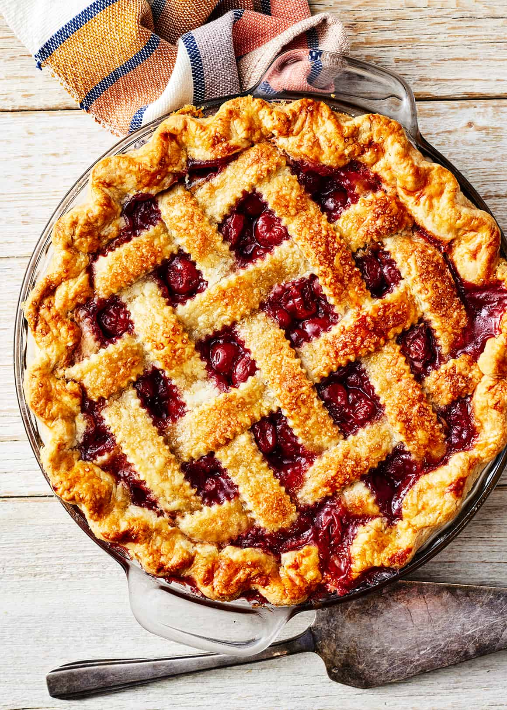

Cherry Pie
Cherry pie is a dessert that features a sweet and tangy filling made from fresh or canned cherries, sugar, and sometimes a hint of almond extract. The filling is typically encased in a flaky pie crust, which can be either a single or double crust, with lattice tops being particularly popular for their aesthetic appeal.
